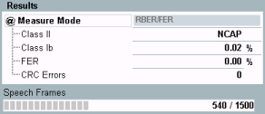

Mode RBER/FER
In loop mode A, the MS receiver detects bad frames and declares them as erased frames. The remaining good frames are also called residual frames.
In this context, two measurement results are defined. The residual bit error rate (RBER) characterizes the quality of transmission of the residual frames and the frame erasure ratio (FER) indicates the percentage of erased frames.
Note that AMR full rate speech frames contain no class II bits, so select a different speech channel coding if you want to measure the RBER for class II bits.
For background information, see "Test Loops" and "Frame Structure for BER CS Tests".

BER CS results (RBER/FER mode)
- Class II / class Ib: Residual bit error rate for class II / class Ib bits
- FER: Frame erasure ratio, percentage of erased frames (relative to total number of transferred frames)
- CRC errors: number of speech frames with failed CRC check. The check is performed in the R&S CMW on looped-back speech frames. Bits in frames with CRC error do not contribute to the RBER and FER results.
- Speech frames: number of already evaluated speech frames without CRC error and total number of speech frames to be evaluated.